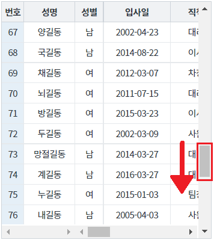
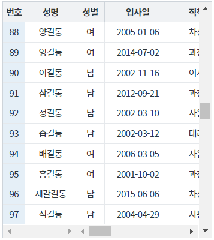
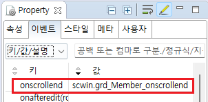

그리드뷰의 onscrollend 이벤트를 사용하려 데이터를 추가하는 예시입니다. 그리드뷰의 세로 스크롤이 (마지막 행 건수 - 10건)의 높이에 위치하면 100건씩 데이터가 추가되며, 최대 600건의 데이터가 로드됩니다.
세로 스크롤이 (마지막 행 건수 - 10건)의 높이에 위치하면 100건씩 데이터 추가하기
마우스를 이용하여 그리드뷰의 세로 스크롤을 하단으로 이동시킵니다.
[실행 예시 이미지]

세로 스크롤이 바닥(전체 건수 - 10건)에 위치하면 100건의 데이터가 추가됩니다. 총 600건까지 반복됩니다.
[실행 예시 이미지]

속성 loadCount을 지정하여 미리 데이터를 로드하는 것을 추천합니다.
loadCount="10" //onscrollend 이벤트를 발생에 필요한 남은 행의 수. 세로 스크롤이 하단에 닿은 후 본 속성으로 지정한 값만큼의 행이 남아 있는 경우, onscrollend 이벤트가 발생합니다.
컴포넌트의 이벤트 onscrollend 의 핸들러를 정의합니다. 예제 파일에서는 핸들러로 사용할 함수명을 다음과 같이 정의하였습니다. onscrollend : scwin.grd_Member_onscrollend //세로 스크롤이 하단에 닿을 때 발생합니다.
그림 1.웹스퀘어5 SP5 스튜디오의 Property View(속성창)의 이벤트탭 예시

스크립트 탭에서 핸들러 함수를 정의합니다.
/** * grd_Member의 onscrollend 핸들러 * 데이터를 추가합니다. */ scwin.grd_Member_onscrollend = function() { var startRow = dlt_Member.getRowCount(); //그리드뷰와 연결된 DataList의 행 수 반환받기 // DataList의 행의 수가 600건보다 작을 경우에만 추가 조회합니다. if (600 > startRow) { //추가할 데이터를 호출할 로직 구성. } };
onscrollend
loadCount
[웹스퀘어5 SP5 개발 가이드] GridView
링크 : https://docs1.inswave.com/sp5_user_guide/86bdcf48029b958b
[웹스퀘어5 SP5 개발 가이드] GridView 무한 그리드
링크 : https://docs1.inswave.com/sp5_user_guide/86bdcf48029b958b#d1a15b8fca307015